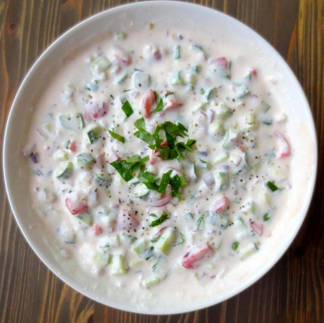

Raitha
Description
A very simple recipe for a yogurt-based side that is flavored with spices, fresh herbs, and vegetables.

Ingredients
- A cup (150g) of plain yogurt
- A few tablespoons of one or more of the following (chopped)
- Onion
- Cucumber
- Tomatoes
- Green Chillies
- Corinader leaves
- Salt to taste
- A few shakes of ground cumin or chat masala powder to garnish
Steps
- Whisk the yoghurt for a few seconds with a splash of water
- Combine the chopped veggies in a serving bowl with the coriander. Stir in the beaten yogurt and mix well
- Add salt to taste and mix some more.
- Garnish with ground cumin powder and serve.